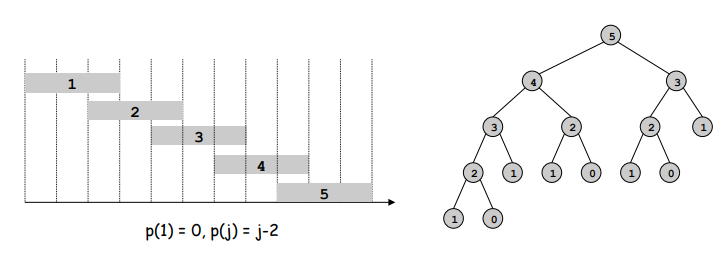
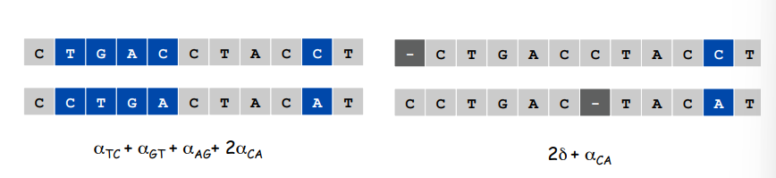

动态规划¶
约 1151 个字 预计阅读时间 4 分钟
Dynamic programming: Break up a problem into a series of overlapping sub-problems, and build up solutions to larger and larger sub-problems.
Weighted Interval Scheduling¶
Designing a Recursive Algorithm¶
Probblem Description
- Job \(j\) starts at \(s_j\), finishes at \(f_j\), and has weight or value \(v_j\).
- Two jobs are compatible if they don't overlap.
- Goal: find maximum weight subset of mutually compatible jobs.
我们首先将所有的工作按完成时间排序并标记： \(f_1\le f_2\cdots\le f_n\)。 定义 \(p(j)\) 是与工作 \(j\) 兼容的最大下标工作 \(i\)。
现在我们考虑最优解 \(\mathcal{O}\)。对于 \(\mathcal{O}\), 我们可以断定最后一个工作要么属于 \(\mathcal{O}\), 要么不属于。倘若属于，那么下标位于 \(p(n)\) 和 \(n\) 之间的工作肯定不属于 \(\mathcal{O}\)，此时 \(\mathcal{O}\) 就等于集合 \(\left\{1,\cdots, p(n)\right\}\) 的最优解加上 \(v_n\)。倘若不属于，\(\mathcal{O}\) 就等于集合 \(\left\{1, \cdots,n-1\right\}\) 的最优解。至此我们就将原问题分割为了几个子问题，并且我们可以定义 \(OPT(j)\) 为集合 \(\left\{1,\cdots, j\right\}\) 的最优解:
并且第 \(j\) 个工作属于最优解中当且仅当 \(v_j+OPT(p(j))\ge OPT(j-1)\)。
至此我们就得出了递归版本的算法：
然而，递归版本的算法花费了指数级别的时间，因为有些值我们需要重复计算，下图的递归树展示了这一点。

Memoizing the Recursion¶
可以观察到，我们的算法实际上只解决了 \(n+1\) 个不同的子问题，即Compute-Opt(0), \(\cdots\), Computer-Opt(n), 为了消除递归的冗余，我们考虑将每次子问题被第一次计算后的结果存起来，即额外声明一个数组 \(M[0,\cdots, n]\):

显然上述算法的时间复杂度是 \(O(n)\)。
上述算法中，我们只计算了最优解，并不知道最优解中有哪些工作。实际上，通过第 \(j\) 个工作属于最优解中当且仅当 \(v_j+OPT(p(j))\ge OPT(j-1)\)的性质，我们可以在 \(O(n)\) 时间内找到完整的解。
Exercise

现在，我们可以将递归的算法转化为迭代的算法：

A Basic Outline of Dynamic Programming
- There are only a polynomial number of subproblems.
- The solution to the original problem can be easily computed from the solutions to the subproblems.
- There is a natural ordering on subproblems from smallest to largest, together with an easy-to-compute recureence that allows one to determine the solution to a subproblem from the solutions to some number of smaller subproblems
RNA Secondary Structure¶
Problem Description
A single-stranded RNA molecule can be viewed as a sequence of \(n\) symbols drawn form the alphabet \(\left\{A,C,G,U\right\}\). Let \(B=b_1b_2\cdots b_n\) be a single-stranded RNA molecule. A set of secondary structure on \(B\) is a set of pairs \(S={(i,j)}\), where \(i,j\in {1,2,\cdots, n}\), that satisfies the following conditions:
- The ends of each pair in \(S\) are separated by at least four intervening bases; that is, if \((i,j)\in S\), then \(i<j-4\).
- The elements of any pair in \(S\) consist of either \(\left\{A,U\right\}\) or \(\left\{C,G\right\}\).
- if \((i,j)\) and \((k,l)\) are two pairs in \(S\), then we cannot have \(i<k<j<l\) (The noncrossing condition).
We want to maximize the possible number of base pairs.
现在我们开始为这个问题设计动态规划算法。首先我们从最 trival 的想法开始，我们定义 \(OPT(j)\) 是 \(b_1b_2\cdots b_j\) 的最优解。根据之前的思路, \(b_j\) 要么在最优解中，要么不在。倘若不在的话，\(OPT(j)=OPT(j-1)\)。但是如果在的话，\(j\) 一定和 \(t\) 匹配，并且 \(t<j-4\)。这样的话，由于 noncrossing condition 的存在，我们要求没有其它的组合一端在 \((0,t-1)\), 另一端在 \((t+1, j-1)\) 中，这将我们的子问题分成了两个，其中一个是找到 \((t+1, j-1)\) 的最优解，但这并不符合我们定义的范式。因此我们思考添加一个变量，扩大子问题的范围。
Dynamic Programming over Intervals¶
定义 \(OPT(i,j)\) 是 \(b_ib_{i+1}\cdots b_j\) 的最优解。同样地，我们考虑最后一个基 \(b_j\)：
- \(j\) 在最优解中, 和 \(t<j-4\) 进行匹配。此时 \(OPT(i,j)=OPT(i,t-1)+OPT(t+1,j-1)+1\)
- \(j\) 不在最优解中。此时 \(OPT(i,j)=OPT(i,j-1)\)
因此可以得到我们的状态转移方程：\(OPT(i,j)=\max(OPT(i,j-1),\max_{i<t<j}(OPT(i,t-1)+OPT(t+1,j-1)+1))\)。
接下来我们考虑：is there a natural ordering on subproblems from smallest to largest? 很显然，我们按间隔(\(k=j-i\))从小到大依次计算。

总共有 \(O(n^2)\) 的子问题，计算 \(OPT\) 需要 \(O(n)\)，因此总时间复杂度为 \(O(n^3)\)。
Sequence Alignment¶
Edit Distance
- Gap penalty \(\delta\).
- Mismatch penalty \(\alpha_{pq}\)
- Cost: sum of gap and mismatch penalties.
- Goal: minimize the cost.

Sequence Alignment

TODO
创建日期: 2024年4月20日 22:02:37